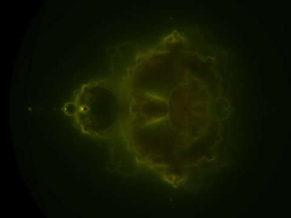

07.05.07
Posted in books, programming, reviews, wikipedia at 10:08 pm by danvk
There’s a long tradition of great titles in the software engineering world. Djikstra’s “Goto Considered Harmful” has spawned thousands of imitators, and even a meta-paper. Fred Brook’s The Mythical Man-Month clicks as soon as you understand the title. Eric S. Raymond’s “The Cathedral and the Bazaar” gives open source software its defining image.
I read “The Cathedral and the Bazaar” as an introduction to the world of open source software for someone interested in joining it. There’s a history lesson to explain where you’ve come from and what you’ve accomplished. There’s arguments and a case study to show that you’re on the right ship. And finally, the essay serves as a call to arms, to get you excited about becoming a contributor.
I found the history lesson most interesting. I’d had some understanding of this before, but lacked much detail. ESR gives a first-person account of UNIX and software development from the late 1970′s to the present. This is the canonical story of open source. It has its heroes and villains, its true believers and false idols. There’s the Moses figure, Richard Stallman, who freed the users of UNIX from the oppressive yoke of restrictive licenses. But like Moses, he couldn’t enter the promise land. Open source stagnated, awaiting its Last True Prophet. This was Linus Torvalds, who created the Linux kernel, the last piece of the open source operating system.
ESR really uses that of tone. I get the sense that he’s intimidated by Richard Stallman and absolutely idolizes Linus Torvalds. The essay drips with hero worship. Linus is the visionary whose vision he’s writing about.
Beyond the hero worship, there is a clear exposition of the open source model. In order to avoid the problem of N^2 channels of communication amongst N contributors, open-source project have a small set of core developers. These core developers have total control over the project. They decide what gets checked in, and where the project goes. It’s a (hopefully) benevolent oligarchy. Outside of that core, there are occasional contributors and legions of testers, who can submit bug reports. Does this strict hierarchy really sound like a Bazaar?
If you want a real Bazaar, think about Wikipedia. Since I’ve never contributed to an open source project, I kept it in mind as a reference point. It works pretty well, but this perspective has the side effect of making open source development look positively Cathedral-like. Think about it. Rather than having a core set of contributors and legions of users/testers, Wikipedia explicitly aims to make all of its users into contributors. It does this by lowering the barriers to entry as low as it conceivably can, even if this leads to vandalism. All that’s needed to contribute is the ability to write in some language. Last time I checked, English had a few more speakers than C++. Rather than just reporting problems, users are empowered to fix them on the spot. See a typo? Just correct it. Want a citation? Find one and plop it in to help future readers.
I enjoyed “The Cathedral and the Bazaar” for the history lesson, but I find its central image misleading. The development process of open-source projects is as well-organized as any commercial venture.
Permalink
05.24.07
Posted in math, programming at 9:47 pm by danvk
(I noticed today that Rice has finally taken down my owlnet page. Over the next few weeks, I’ll be giving some of the interesting pages from that site a new home here on danvk.org. First up is Beal’s Conjecture…)
I’ve put a link to last summer’s work on Beal’s Conjecture over on the right-hand side of the site. A quick overview:
Beal’s conjecture states that, if (x,y,z) are co-prime and m,n,r ≥ 3, then xm + yn ≠ zr. Sound familiar? It should. It’s a generalization of Fermat’s Last Theorem.
What makes Beal’s conjecture especially exciting is that Andrew Beal, a Texas billionaire, has put a $100,000 prize on the proof or disproof of the problem. If it’s false (and most generalizations of FLT have been), then a computer search may have a chance of coming up with the counterexample. Peter Norvig did an initial hunt but came up empty. I extended his results, and also came up empty. Now that I have access to lots of machines, I’d like to extend the search a bit further.
The old article I wrote is still valid, though it contains a misstatement that’s made all the more embarrassing by being in ALL CAPS. I’ll be lazy and leave it as one of those pesky “exercises to the reader” to figure out how I goofed.
Permalink
05.02.07
Posted in boggle, programming at 10:58 pm by danvk
I took JRuby 0.9.9 for a spin with the exceptionally-inefficient Boggle program from a few months back. Here are the numbers:
$ time ruby short.rb c a t d l i n e m a r o p e t s
2338
ruby short.rb c a t d l i n e m a r o p e t s 241.95s user 1.20s system 97% cpu 4:08.35 total
$ time jruby short.rb c a t d l i n e m a r o p e t s
2338
jruby short.rb c a t d l i n e m a r o p e t s 1178.86s user 40.84s system 108% cpu 18:44.44 total
I’d heard JRuby was slow, but this is spectacular. Four times slower than the already-slow Ruby?
I’d always thought that the point of JRuby was to run Ruby programs on the JVM, and hence get the benefits of the JVM’s JIT. I guess not. With that kind of performance, the only possible justification is the ability to use Java libraries.
Permalink
04.17.07
Posted in programming at 9:06 pm by danvk
Ruby as it ships on Mac OS X is spectacularly broken, especially the irb REPL program. I hate pressing backspace and having “^H” show up, and not having an up arrow makes debugging a statement painful.
If you use Ruby under Mac OS X, you owe it to yourself to follow these instructions to rebuild ruby and irb with readline support. Seriously, I have no idea why I never did this sooner. It’s easy as could be, and now I can press up arrow and backspace in irb.
Update: Also worth checking out: tweaking irb, which explains how to turn on tab-completion and persistent history between sessions. Scariest bit about that page: it ends with “(Hope this post serves your needs Dan.)” Yikes, it sure did!
Permalink
04.06.07
Posted in programming, science, wikipedia at 11:50 pm by danvk
While reading Wikipedia’s Mandelbrot set article, I stumbled upon the exceedingly cool Buddhabrot, and the even cooler Nebulabrot:

I’ll write more about the math later, but what I find most interesting about it is how it naturally fills in the “boring space” inside the Mandelbrot set:
The interior of the Nebulabrot is also a fractal, as a zoom shows:
Those little buds are all Mandelbrots.
Being a CS-type, once I saw the definition, I immediately set out to render the most detailed Nebulabrot ever seen. It’s 10240×7680 and gorgeous. Here are some zooms (click for full-res versions):
The most “nebular” part
“Island universes” along the negative x-axis
Here’s a link to the full JPEG (4.3MB) and the full PNG (44 MB).
If you zoom all the way in, you’ll see some graininess, even in the PNG. This isn’t a compression artifact. It’s a hint of further structure. If I’d cranked up the dwell limit in my rendering, the noise would have been even more miniature Mandelbrot sets!
Update: MarkCC over at Good Math, Bad Math has a post about MapReduce that discusses the way I generated this at length.
Permalink
« Previous Page — « Previous entries
Next entries » — Next Page »
{kind=link}
{kind=link}
{kind=link}
{kind=link}